Maio foi um dos meses mais tristes para fãs de mangás e animes. Kentaro Miura, autor e criador de Berserk, faleceu no dia 6 de maio de 2021, aos 54 anos, por uma dissecção aórtica aguda. Um dos maiores mestres da arte dos mangás, ele deixou um legado incomparável, que influenciou diversos filmes, jogos e animes.
Para celebrar a vida e a obra deste lendário autor, selecionamos os onze melhores momentos do mangá de Berserk, que mostram o gênio de Miura em sua melhor forma.
Conheça as God Hand
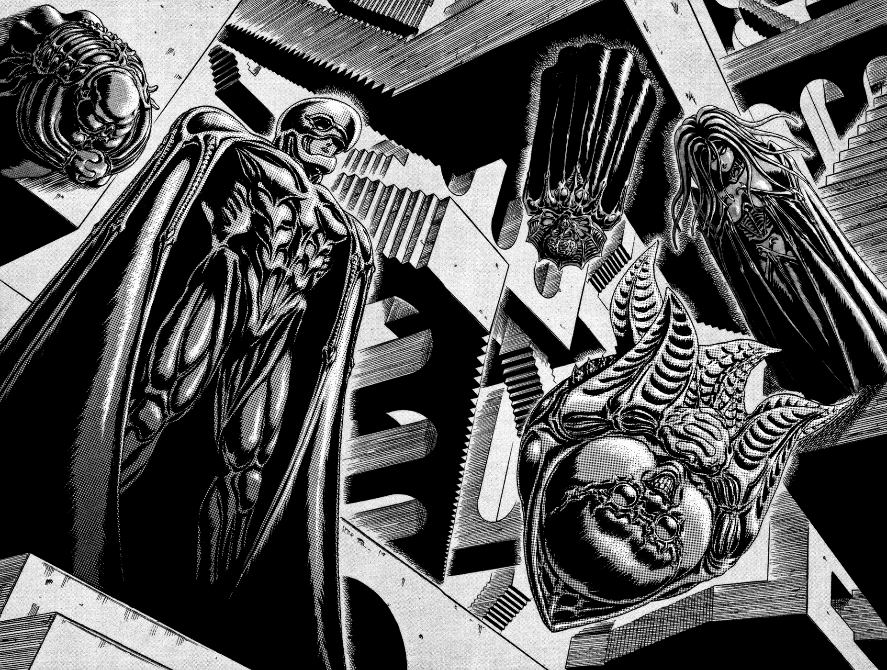E começamos essa lista com uma das imagens mais icônicas de todo o mangá: a primeira vez que ficamos frente a frente com as cinco God Hands, os grandes vilões de todo o mangá. Um momento de arrepiar.
O cenário psicodélico misturado com o design dessas criaturas divinas cria o mais puro horror cósmico. Sabemos só de olhar que eles existem muito acima de nós e que sua mera presença é algo que quebra qualquer lei natural.
E é marcante também por ser a primeira vez que vemos aquele que é um dos maiores e mais marcantes vilões dos animes: Griffith. Que bela maneira de se introduzir o grande inimigo de Guts.
A batalha dos 100 homens
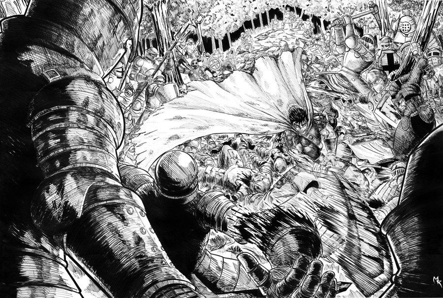Miura já tinha nos mostrado antes o quão bom ele é em criar sequências de ação, mas foi aqui que ele revelou ser um dos melhores neste painel da lendária batalha de Guts contra 100 soldados.
A sensação de movimento é incrível, é quase como se conseguíssemos visualizar toda uma cena em uma imagem estática. É um feito que poucos autores conseguem alcançar, e Miura sempre fez parecer fácil.
O início do Eclipse
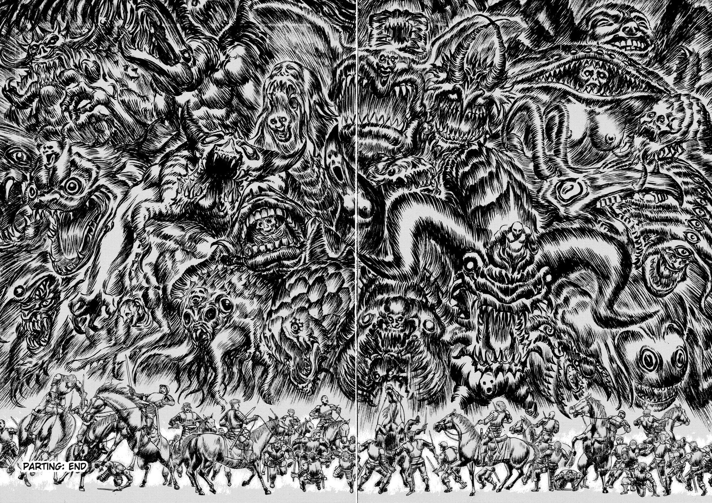Se existe uma imagem que melhor representa o conceito de pesadelo e terror, é esta aqui. Ver os pequenos membros do Bando do Falcão frente a frente com as terríveis criaturas oriundas do Eclipse enche nosso peito de medo e desespero.
Aqui, temos a arte de Miura em sua melhor forma. Os detalhes e a composição revelam um mestre do desenho sem igual, que com um único painel consegue despertar fortes sentimentos no leitor. Só de olhar, já sentimos que uma grande tragédia está por vir. Um dos maiores shows de horror já criados em qualquer mídia tem início.
Guts vs. Rosine
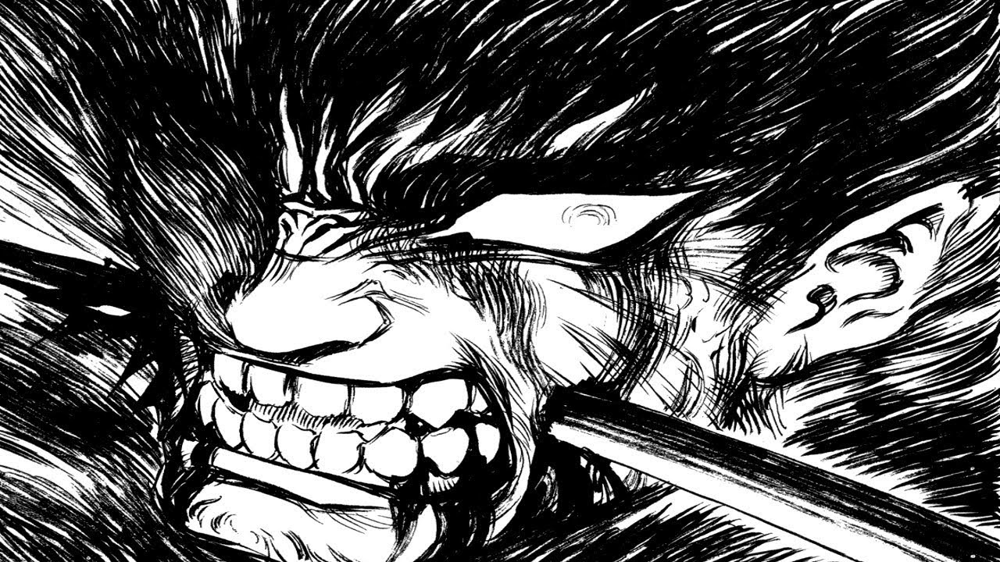Se um dia eu fizer um dicionário ilustrado, com certeza essa imagem estaria junto da palavra “Badass”. E nada mais. Porque essa cena de Berserk representa tão bem esse termo que nenhuma explicação é necessária
A batalha contra Rosine é uma das melhores lutas de todo o mangá e esse momento foi o que quase gritei um palavrão bem sonoro, enquanto lia no ônibus. Aqui Guts mostrou até onde vai sua determinação e fúria, que nada, absolutamente nada pode pará-lo. Ele é quase uma força da natureza, o Doom Guy dos mangás.
E também uma das melhores representações do quanto Guts é um monstro igual aqueles que enfrenta.
Luz e Trevas
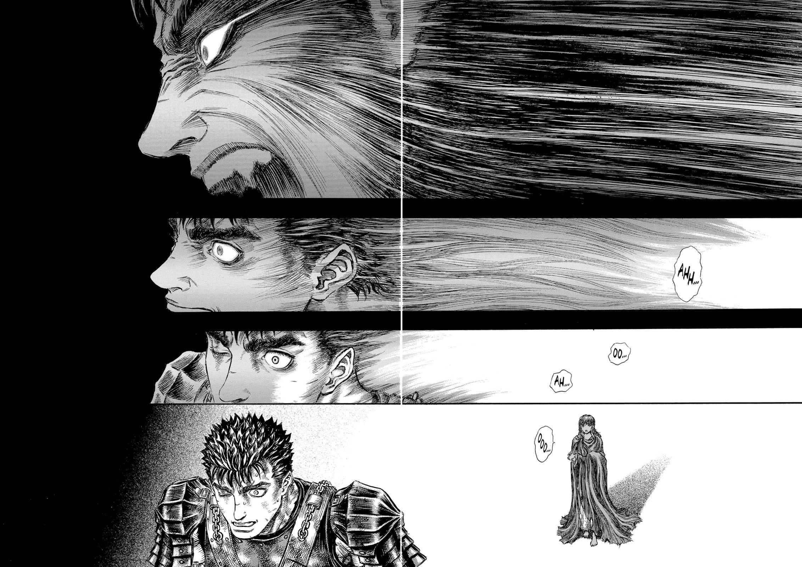Pessoalmente, este é meu momento favorito de toda a série. Não é o desenho mais detalhado e impressionante de Berserk, porém é um dos mais tocantes e que mostra a genialidade de Miura em usar a arte sequencial dos quadrinhos como poucos.
A forma como as linhas pretas vão dando lugar a luz emanada por Caska é lindo, e mostra como o as trevas do coração de Guts vão sendo iluminadas ao perceber que existe algo muito mais importante do que seu ódio e sua vingança. Aqui tem início uma nova jornada, bem mais esperançosa do que tudo que vimos antes.
Berserk Armor
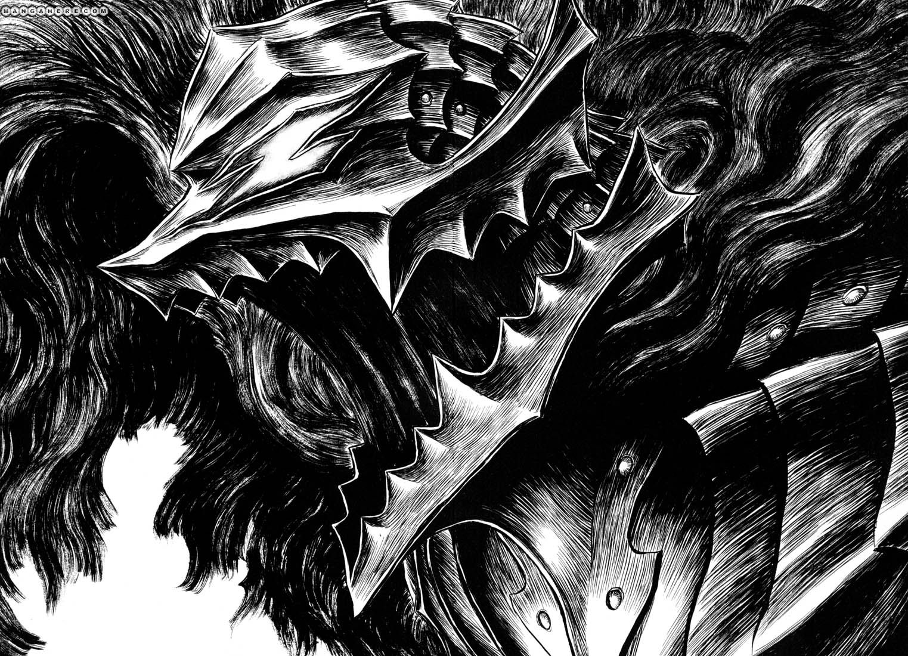Os designs de Miura são incríveis. Desde as tenebrosas criaturas a personagens cheio de personalidade, ele sempre deu um show nesse quesito. E um dos melhores trabalhos do autor nesse quesito foi a Armadura Berserk.
Esta é a primeira imagem que temos de sua forma em Guts, quando o capacete se transforma na cabeça do cão que representa todas as trevas do coração do protagonista. Sua aparência é legal demais, sendo badass e assustadora no mesmo nível. Apreciar a armadura se tornou recorrente para mim sempre que ela aparecia
Um momento de paz
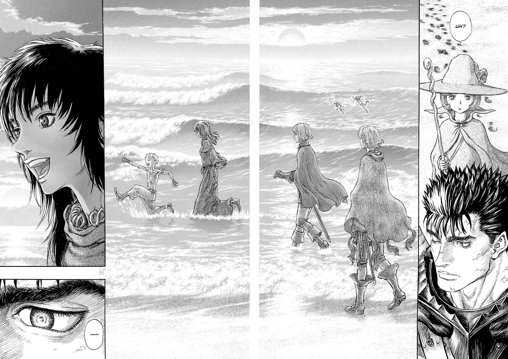Este é um momento simples. Não é um grande acontecimento ou algo épico, apenas os personagens se divertindo um pouco na praia antes das próximas batalhas. E é justamente por isso que ele toca tão fundo.
É um pequeno suspiro de paz e alegria em meio a toda carnificina e tristeza. Ver Isidro brincar como uma criança, Farnese toda atrapalhada, Serpico se divertindo com a situação e o sorriso de Caska realmente nos enche de uma melancólica felicidade. Pois sabemos que nada daquilo vai durar muito. E obviamente não dura. Mas pelo menos pudemos curtir com os personagens um singelo momento.
Tag Team Battle
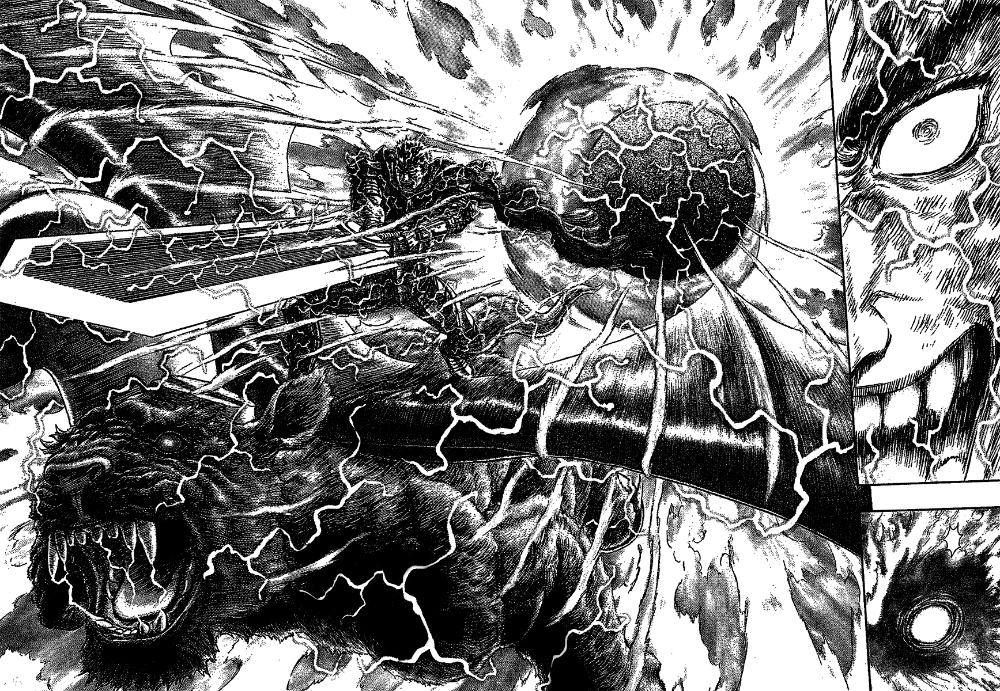Este é um dos momentos mais empolgantes de todo o mangá. Guts e Zod podem se odiar muito, contudo diante de um inimigo em comum eles se uniram e nos entregaram essa imagem maravilhosa.
Sério, quando você chega a essa página, após a intensa batalha, a vontade é pular da cadeira e dar um soco no ar de tão empolgante que é. Impressionante como Berserk consegue ser tudo: assustador, emocionante e ainda nos entregar as mais empolgantes cenas de ação que um mangá já viu.
Dando um tapa em um rei
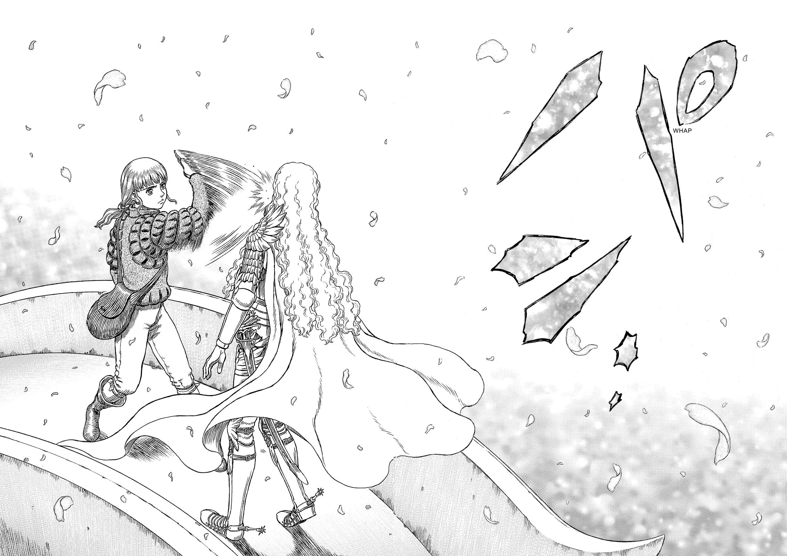Rickert sempre foi tratado como o membro mais fraco do Bando do Falcão. Pequeno, fraco e um tanto medroso, ele só sobreviveu ao Eclipse porque não estava lá. Mas essa cena mostra que ele se tornou um dos mais corajosos de todo o grupo.
Rickert está em Falconia, cercado por aliados de Griffith. Não só isso, mas ele é cultuado como um messias, um deus entre os homens, algo que de fato ele é. E ainda assim Rickert mete um tabefe na cara do Falcão. Tão bem dado que o som deve ter ecoado por todo o reino. É de vibrar não é mesmo?
Aquele não é o Griffith que ele conheceu. Aquele é um monstro, que apesar de todo o bem que fez ao povo de seu reino, jamais vai merecer perdão pelo que fez no Eclipse. E ao demonstrar todo os seus sentimentos sem a menor hesitar, Rickert prova que é e sempre foi alguém digno de andar ao lado dos falcões de Midland.
Despertar de Caska
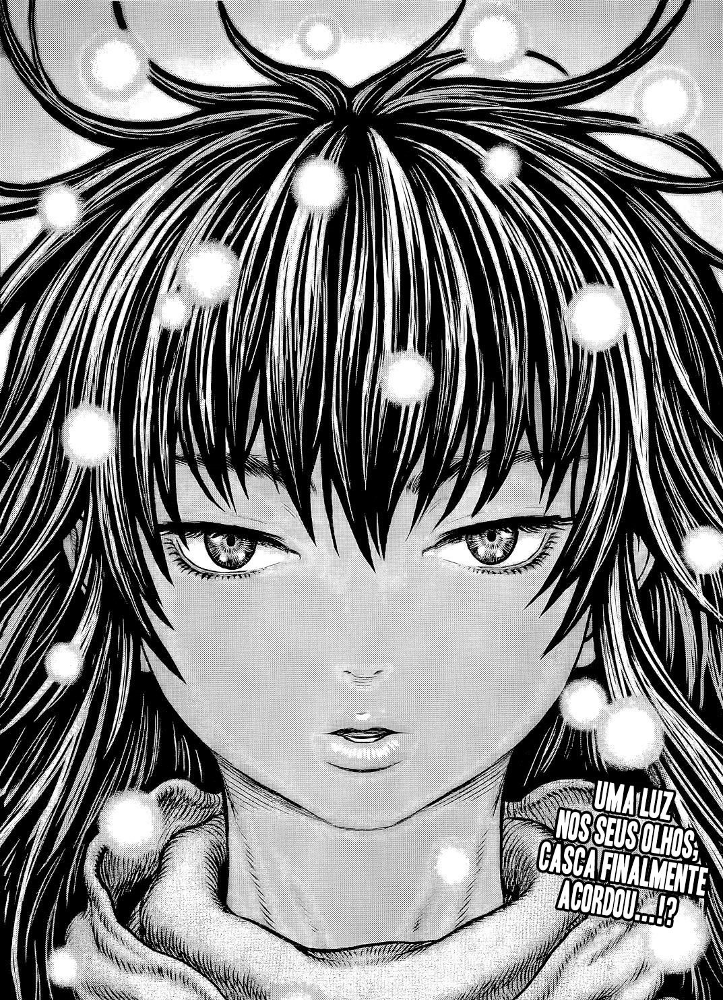Essa é a imagem que muitos fãs de Berserk queriam ver. Após 25 volumes e quase 20 décadas, finalmente Caska recuperou a sua personalidade e voltou a ser a guerreira que tanto amamos.
Foram vários e vários capítulos em que vimos Guts e seus amigos apanharem, se levantarem, lutarem e depois apanharem um pouco mais. Ver toda essa batalha ser recompensada é extremamente satisfatório. Aposto que colocou um grande sorriso no seu rosto. E vai, até algumas lágrimas devem ter escorrido.
Seja bem vinda de volta Caska, a grande Comandante do Bando do Falcão.
A despedida
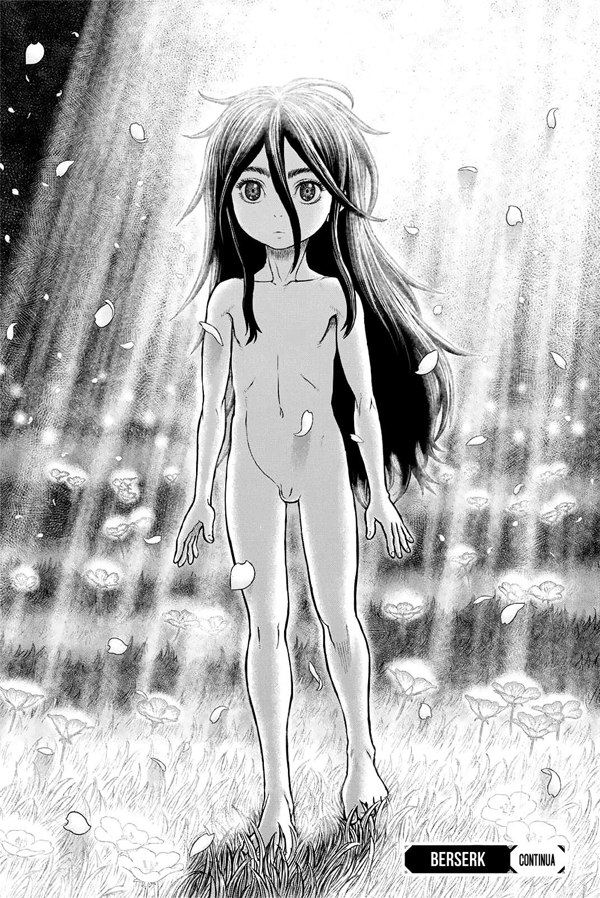Apesar do assistente de Miura ter dado pistas que ele pode fazer uma continuação de Berserk, esta é, por enquanto, a última imagem de toda a série. O último desenho de Kentaro Miura que pudemos ver. O que viria a seguir talvez tenha que ficar para sempre como parte da nossa imaginação.
Mesmo que nunca tenha fim, Berserk é uma obra que merece ser lida e relida por todos. Uma obra prima, que teve um impacto gigantesco em toda a Cultura Pop, seja Oriental ou Ocidental. Um raro encontro de originalidade, arte estupenda e roteiro perfeito.
Miura Sensei, muito obrigado pelos 363 capítulos que você nos presenteou ao longo de boa parte de sua vida. Obrigado pelos momentos que nos encantaram, nos encheram de horror, que nos cobriram de desespero e que nos mostraram que mesmo no mais horrível dos mundos ainda existe a esperança. E que vale a pena lutar por ela.
Seu legado está vivo no coração de todos os fãs que você conquistou, e tenho certeza que continuará emocionando muitas pessoas ao longo dos anos. Nos veremos de novo na próxima vez que eu reler Berserk.
Foi muito difícil escolher apenas onze momentos incríveis, pois se você sabe muito bem que existem centenas que poderiam ter entrado nessa lista. Então conta nos comentários os seus momentos favoritos e o que Berserk significou para você.
Outros mangás relacionados que podem interessar:
- Clássicos: